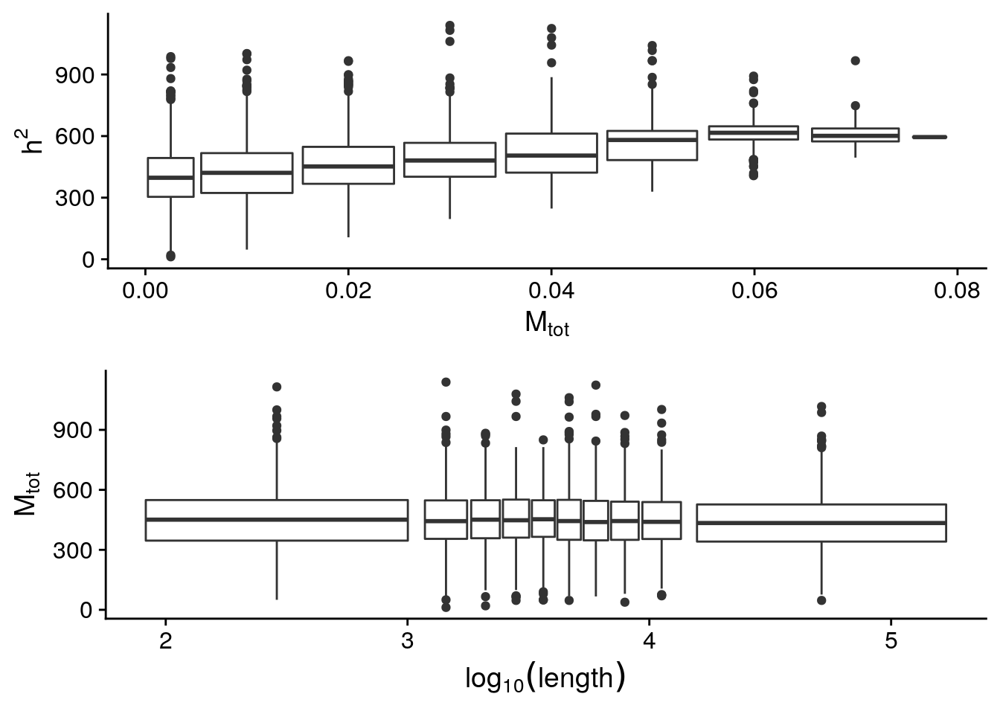

ldsc_run
daiuc
2021-08-17
Last updated: 2021-08-28
Checks: 7 0
Knit directory: lab3updates/
This reproducible R Markdown analysis was created with workflowr (version 1.6.2). The Checks tab describes the reproducibility checks that were applied when the results were created. The Past versions tab lists the development history.
Great! Since the R Markdown file has been committed to the Git repository, you know the exact version of the code that produced these results.
Great job! The global environment was empty. Objects defined in the global environment can affect the analysis in your R Markdown file in unknown ways. For reproduciblity it’s best to always run the code in an empty environment.
The command set.seed(20210810) was run prior to running the code in the R Markdown file. Setting a seed ensures that any results that rely on randomness, e.g. subsampling or permutations, are reproducible.
Great job! Recording the operating system, R version, and package versions is critical for reproducibility.
Nice! There were no cached chunks for this analysis, so you can be confident that you successfully produced the results during this run.
Great job! Using relative paths to the files within your workflowr project makes it easier to run your code on other machines.
Great! You are using Git for version control. Tracking code development and connecting the code version to the results is critical for reproducibility.
The results in this page were generated with repository version 3b937d4. See the Past versions tab to see a history of the changes made to the R Markdown and HTML files.
Note that you need to be careful to ensure that all relevant files for the analysis have been committed to Git prior to generating the results (you can use wflow_publish or wflow_git_commit). workflowr only checks the R Markdown file, but you know if there are other scripts or data files that it depends on. Below is the status of the Git repository when the results were generated:
Ignored files:
Ignored: .Rhistory
Ignored: .Rproj.user/
Note that any generated files, e.g. HTML, png, CSS, etc., are not included in this status report because it is ok for generated content to have uncommitted changes.
These are the previous versions of the repository in which changes were made to the R Markdown (analysis/ldsc_run.Rmd) and HTML (docs/ldsc_run.html) files. If you’ve configured a remote Git repository (see ?wflow_git_remote), click on the hyperlinks in the table below to view the files as they were in that past version.
| File | Version | Author | Date | Message |
|---|---|---|---|---|
| html | 3b937d4 | Chao Dai | 2021-08-28 | update |
| Rmd | cb7a46e | Chao Dai | 2021-08-28 | updated for RCC; used CDS length, GTEx signif SNPS slopes are now z-scores |
| html | cb7a46e | Chao Dai | 2021-08-28 | updated for RCC; used CDS length, GTEx signif SNPS slopes are now z-scores |
| html | abf344d | daiuc | 2021-08-25 | Build site. |
| Rmd | f497973 | daiuc | 2021-08-25 | wflow_publish(all = T) |
| html | 84c61eb | daiuc | 2021-08-25 | Build site. |
| Rmd | 8d7a134 | daiuc | 2021-08-25 | wflow_publish(all = T) |
| html | 19bfb03 | daiuc | 2021-08-25 | Build site. |
| Rmd | dcb2524 | daiuc | 2021-08-25 | wflow_publish(all = T) |
| html | dcb2524 | daiuc | 2021-08-25 | wflow_publish(all = T) |
| Rmd | b936376 | daiuc | 2021-08-25 | wflow_git_commit(all = T) |
| html | b936376 | daiuc | 2021-08-25 | wflow_git_commit(all = T) |
| Rmd | 6d54ca0 | daiuc | 2021-08-25 | wflow_git_commit(all = T) |
| html | 6d54ca0 | daiuc | 2021-08-25 | wflow_git_commit(all = T) |
| html | 5c7697f | daiuc | 2021-08-25 | Build site. |
| Rmd | 5584993 | daiuc | 2021-08-25 | wflow_publish(“analysis/ldsc_run.Rmd”) |
| html | a1855ca | daiuc | 2021-08-25 | Build site. |
| Rmd | d749e67 | daiuc | 2021-08-25 | wflow_publish(“analysis/ldsc_run.Rmd”) |
| html | 2662304 | daiuc | 2021-08-24 | Build site. |
| Rmd | 9efd826 | daiuc | 2021-08-24 | wflow_publish(“analysis/ldsc_run.Rmd”) |
| html | 1392841 | daiuc | 2021-08-24 | Build site. |
| Rmd | 090c215 | daiuc | 2021-08-24 | wflow_publish(“analysis/ldsc_run.Rmd”) |
| html | 88193d6 | daiuc | 2021-08-24 | Build site. |
| Rmd | e11a244 | daiuc | 2021-08-24 | wflow_publish(“analysis/ldsc_run.Rmd”) |
| Rmd | f534edc | daiuc | 2021-08-24 | update |
| html | f534edc | daiuc | 2021-08-24 | update |
| html | 61bffed | daiuc | 2021-08-18 | Build site. |
| Rmd | 572fcea | daiuc | 2021-08-18 | wflow_publish(“analysis/ldsc_run.Rmd”, force = T, update = T, |
| html | 1643aee | daiuc | 2021-08-18 | Build site. |
| Rmd | 63b24a3 | daiuc | 2021-08-18 | wflow_publish(“analysis/ldsc_run.Rmd”, force = T, update = T, |
| html | a3470ab | daiuc | 2021-08-18 | Build site. |
| html | 7800765 | daiuc | 2021-08-18 | Build site. |
| Rmd | 78b116b | daiuc | 2021-08-18 | wflow_publish(“analysis/ldsc_run.Rmd”, force = T, update = T, |
| html | 9cdac13 | daiuc | 2021-08-18 | Build site. |
| html | 91add15 | daiuc | 2021-08-18 | Build site. |
| Rmd | b4016e6 | daiuc | 2021-08-18 | wflow_publish(“analysis/ldsc_run.Rmd”) |
| html | 36fb6e0 | daiuc | 2021-08-18 | Build site. |
| Rmd | 6c43157 | daiuc | 2021-08-18 | wflow_publish(c(“analysis/modified_code.Rmd”, “analysis/ldsc_run.Rmd”)) |
| html | f11e618 | daiuc | 2021-08-18 | Build site. |
| html | 386560e | daiuc | 2021-08-18 | Build site. |
| Rmd | c5ff00f | daiuc | 2021-08-18 | wflow_publish(c(“analysis/modified_code.Rmd”, “analysis/ldsc_run.Rmd”)) |
| html | cf145bb | daiuc | 2021-08-18 | Build site. |
| Rmd | 39b918d | daiuc | 2021-08-18 | wflow_publish(c(“analysis/modified_code.Rmd”, “analysis/ldsc_run.Rmd”)) |
| Rmd | 470d29c | daiuc | 2021-08-18 | update |
| html | 470d29c | daiuc | 2021-08-18 | update |
| Rmd | 74cc100 | daiuc | 2021-08-17 | a |
| html | 74cc100 | daiuc | 2021-08-17 | a |
| html | f505867 | daiuc | 2021-08-17 | Build site. |
| html | f1dc131 | daiuc | 2021-08-17 | Build site. |
| Rmd | e5f7d68 | daiuc | 2021-08-17 | wflow_publish(c(“analysis/ldsc_run.Rmd”)) |
| Rmd | 1027954 | daiuc | 2021-08-17 | edit |
| html | 1027954 | daiuc | 2021-08-17 | edit |
Objective 1: estimate each gene’s total cis heritability
A given gene’s total heritability can be estimated by first estimate average per SNP heritability for each annotation category \(\bar{\tau_c}\). Then A given gene’s total heritability can be computed by multiplying number of all qualifying SNPs in cis Modified ldsc codes to output \(\tau_c\) of each category as well as overlapping SNPs.
\[h^2_g(total) = \sum_C{M_c \bar{\tau_c}}\]
To compute \(M_c\) and \(\bar{\tau_c}\), I made these modifications in the original scripts of LD SCore v1.0.1:
Output number of SNPs for each category, essentially an inner join between cis-eQTL summary stats SNPs and LD score SNPs from each of the 53 category (including base, ie. just SNPs).
This involves modifying the functions of:
annot_parser,annotfunctions in theparse.pyscript_read_annotfunction in thesumstats.pyscript_overlap_outputmethod in theregression.pyscript
With the modification,
ldscwill now output correct intersectedM_annotor number of cis-eQTL SNPs for each categoryCode for computing coefficient is not modified, since it already only take in intersection between ld score SNPs and cis-eQTL SNPs
Result: - \(h^2\) for 18373 genes are estimated
Objective 2: explore the relationships between heritability and gene features
Effectively, we now compare cis gene heritability estimated from above with other metrics that measure regulatory or functional characteristics of genomic regions / genes.
The following dataset from Wang et al. AJHG 2020 (link) are used. 15,913 genes are incorporated from this dataset (after removing NA values). The h^2 dataset and teh EDS dataset are joined together on gene IDs. After having removed negative h^2 genes, 8,936 genes remain. Zscores are computed for each gene.
Example of combined dataset
| gene_id | gene_nm | h2 | m_tot | EDS | pLI | RVIS | max.abs.slope_z | N_QTLs | length |
|---|---|---|---|---|---|---|---|---|---|
| ENSG00000000419 | DPM1 | 0.0105250 | 576 | 0.4441988 | 0.5367475 | 64.45 | 4.595151 | 98 | 3187 |
| ENSG00000000457 | SCYL3 | 0.0179916 | 381 | 0.5631780 | 0.5470538 | 51.26 | 9.650809 | 1358 | 8282 |
| ENSG00000000460 | C1orf112 | 0.0092650 | 354 | 0.2556235 | 0.0000001 | 10.81 | 12.610171 | 1564 | 8235 |
| ENSG00000000938 | FGR | 0.0079872 | 207 | 0.4975906 | 0.1771744 | 11.68 | 7.325070 | 194 | 7286 |
| ENSG00000000971 | CFH | 0.0044361 | 249 | 0.4242650 | 0.9996310 | 39.03 | 9.885834 | 477 | 6195 |
| ENSG00000001036 | FUCA2 | 0.0100081 | 436 | 0.5437246 | 0.0003656 | 57.48 | 5.587449 | 186 | 1728 |
QC plots
After rounds of filtering about 9000 protein coding genes are left for downstream analysis
Summary stats of qualifying SNPs per gene
Min. 1st Qu. Median Mean 3rd Qu. Max.
12.0 352.0 445.0 448.6 545.0 1139.0 Distribution of qualifying SNPs for \(h^2\) estimate

Test correlation between qualifying SNPs and heritability.
More qualifying SNPs do seem to contribute to higher heribability. However, longer genes do not seem to include more qualifying SNPs.
Pearson's product-moment correlation
data: m_tot and h2
t = 30.976, df = 8936, p-value < 2.2e-16
alternative hypothesis: true correlation is not equal to 0
95 percent confidence interval:
0.2925448 0.3299896
sample estimates:
cor
0.3113881 